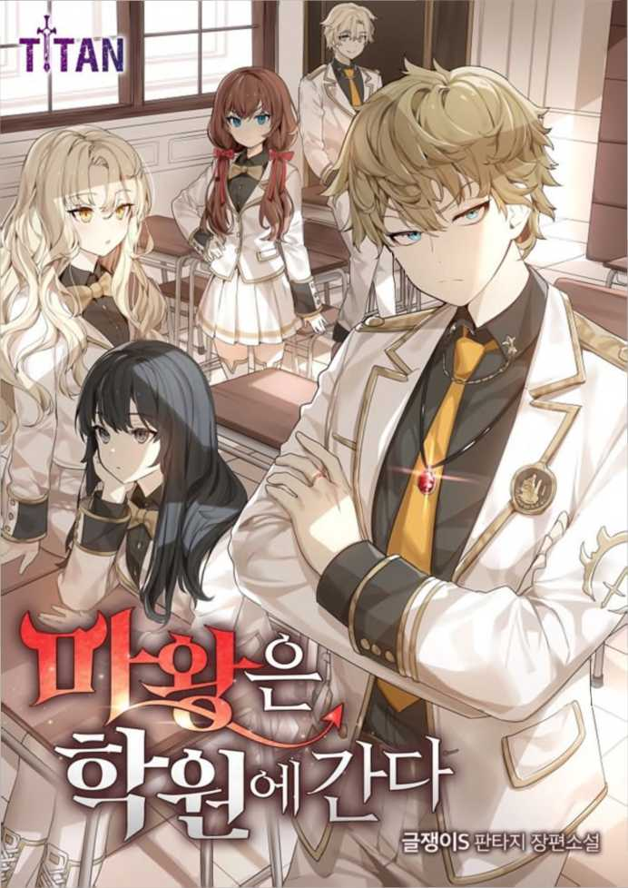

##!!## Chapter 75
75
##!!##Chapter 75
Chapter 75
. .
Since the festival was cancelled, all other official schedules must have been canceled as well. So Charlotte and Bertus, who returned to Temple on Monday, didnt look particularly exhausted.
.
Monday, the day our normal school life started again.
. .
The atmosphere around the entire Temple seemed to be very much subdued. It wasnt just the Royal Class that was like that, but the expressions of those passing by us seemed sullen and tense as well.
. .
The mood around Temple was so low that it practically hit the ground. Until yesterday there werent any people around, so now it was more than obvious.
.
The pressure sure was heavy.
1 A, B .
And the places in Temple that were the most subdued and depressed were probably none other than the first year Class A and B of the Royal Class.
. .
All of you must be aware that the security of Temple is equivalent to that of the Imperial Castle. As long as you do not go out of Temple recklessly, your safety is definitely guaranteed.
.
Mr. Epinhauser was delivering us this message.
. . .
However, Temple is fully aware about the concerns your parents might hold because of the incident that took place in the Imperial Capital. We shall put your security first. However, if you believe it to be too dangerous here, I would ask you to apply for a leave of absence.
. . .
Since almost all the children here were part of some influential family, there was a possibility that the Emperor deemed it too dangerous to keep them here and sent them home. That was why Temple offered them to take a leave of absence during this semester, which was highly unusual. However, unprecedented situations required unprecedented measures.
?
Wait, wasnt that another vacation, essentially?
.
Teacher.
4.
What is it, Number 4?
.
Harriet de Saint-Owan suddenly raised her hand.
? ?
What happens if I take a leave of absence? Can I just come back next semester?
. 1 2 .
No, if you take a leave of absence now, you have to repeat the semester. We cannot allow students who have not yet taken all the common classes of the first semester to take the common classes of the second semester.
.
. . .
He basically said that hed allow us to take a leave of absence, but we had to be aware that we had to repeat the semester. Even though we individually took courses with other professors, common classes were held on Mondays and Thursdays. If one could just skip a semester by taking a leave of absence and immediately get into the second semester, they would have allowed us to just attend one semester a year then.
I never actually introduced that leave of absence system properly, to begin with. It was like the system one had in college, but not really.
. . . . .
However, now an unprecedented terrorist attack had occurred, so settings that I never even set up started to pop out here and there. The system of being allowed to take a leave of absence if one had to, only got implemented after graduating from Higher Education. Basically in graduate school. Now, they did allow it even in the Higher Education Department, although there was a price to pay for it.
.
Seeing the future get tangled up like this in real time made my brain freeze over.
. 1 . .
Anyway, if one took a leave of absence it was guaranteed that one would be left behind. They were forced to repeat a year. There was no one whod actually want to repeat a year, but if it were judged to be too dangerous here, there was nothing that could be done about it.
.
In other words, those who took a leave of absence would drop out from this class.
. .
Each member of this class was part of the main story, and if even one of them left, the story would definitely deviate from what I knew. Although it already got twisted beyond recognition, I wouldnt want it to get twisted even further.
1 ?
Right now it was just a slice-of-life story, but all of them would play important parts in the future, so what would happen if one of them just disappeared for a year?
. .
I was in quite the pickle.
Moreover, it was Harriet who asked this.
4 ?
Number 4, do you want to take a leave of absence?
.
Ah, thats.
.
Harriet seemed to take in her surroundings, then nearly burst into tears.
.
My parents said it was too dangerous.
A 4. .
Number A-4. Harriet de Saint-Owan, someone with a magic related talent.
.
Someone I teased regularly because she was quite innocent and cute.
. .
She was the youngest and most beloved daughter of the Saint-Owan family. So it was quite plausible for them to get their daughter out of this dangerous city, even if she had to repeat a year.
.
Follow me after this class.
.
Yes.
.
Teacher, I would like to receive some counseling as well.
3 .
Number 3, same goes for you.
.
Yes.
Not only Harriet, but even Liana de Grantz, a girl with electrokinetic powers who usually stayed silent, raised her hand.
. . A 2 .
If this were to go on, this unprecedented situation of having two people less in class might actually occur.
.
Damn it.
.
My karma was flowing back to me in real time.
.
This karma called Butterfly effect.
11.
And Number 11.
?
Yes?
. .
While a lot of complicated thoughts were going through my head, Mr. Epinhauser called out to me. Most of the gazes landing on me all seemed to say the same thing. What did you do this time?
?
No, why was I getting treated like someone whod always create some sort of trouble?
1. ?
You were given 1 merit point. Youll understand even if I dont tell you why, right?
. . .
Huh. Ah. Yes.
.
Then I remembered that the nurse teacher told me that Id get 1 merit point for saving Ellen.
.
Everyone was astonished that this troublemaker actually received a merit point.
* * *
1 . .
Even if they had to repeat a year, their parents wouldnt allow their children to encounter any danger, but those guys were part of the main story in the end. Of course, this wouldnt matter so much if this story would only end with the peaceful Temple life section, but after the gates open, each one of them was an important, powerful player.
. .
Each one of them had their own sequence in which they grow and become stronger, but it was impossible to predict what would happen if they were to leave this class. They seemed like surplus fighting power, but each one of them had their place.
.
While I was thinking what to do, Harriet and Liana, who seemed to have gone to counseling, silently took the classes.
.
Regardless of whether those two decided to take that leave of absence or not, the atmosphere in the classroom was similar to all of us standing on a thin sheet of ice over a lake.
.
It seemed like most of my classmates were wondering why I received a merit point, but that wasnt the reason.
.
So, if we substitute this formula like this.
. .
I could even notice that the teacher was all flustered. The teachers should have educated a lot of precious children of noble families, but now they were acutely aware of a certain thing.
.
It was Bertus gaze.
. .
Last week, there had been a terrorist attack on the Imperial Capital, and demons were suspected to be the perpetrators. As a result, all festival activities in the Capital were cancelled and the honor and prestige of the Imperial Family as well as the Empire fell to the ground.
.
There probably were rumors that their Victory in the Demon World War was actually a lie.
, .
Therefore, it was clear that Bertus was under a lot of pressure, so no one was willing to enter the Princes line of sight. That was how uncomfortable they felt.
. .
I was in the last row, so I couldnt see what Bertus, who sat in the front row, looked like. However, everyone was just listening to the class in silence as if they were walking on very thin ice.
.
Likewise, the teacher showed his desire to end this class quickly by only diligently going by the book.
* * *
.
Our Lunch break went on for an hour.
. .
And even then it still felt like everyone was walking on very thin ice. It was an incredibly bizarre view.
. . .
It was true that the atmosphere of the Imperial Capital was quite bad, but even inside of Temple it wasnt any better. However, at lunchtime, when all grades were in the same room eating together, it was downright chilly. Only the sound of the tableware moving quietly could be heard. No one was talking loudly.
.
Of course, Bertus was here, but there was also Charlotte.
1 . .
Although they were only first years, but because they were the Prince and Princess, who obviously were in a very bad mood, even the seniors only ate quietly. It could be felt once again that they had quite the big presence even if they did nothing special in the Royal Class.
.
However, there were some people who had no awareness at all.
-
-Munch, munch
.
Ellen Artorius, who just started eating together with me at some point, was someone like that.
. .
Of course, she was normally the silent type, so it wasnt really all that noticeable that she didnt care. She would just eat, get seconds, and eat some more.
.
But she seemed to be a little noisier than usual.
There were about a hundred people sitting in this dining hall, so it felt really creepy just hearing the sound of tableware.
. . .
Neither Bertus nor Charlotte looked particularly sullen, however, they didnt look particularly happy either. They were quietly eating. None of those two spoke even a single word.
. .
I couldnt take this either. To be honest, I was quite conscious of these young kids as well.
?
How pathetic is that, someone in their 30s being so conscious of 17-year-old kids?
.
Just looking around, theres no one as thick-skinned as you.
2
?
.
Ellen was pretty eager to eat without answering back to me.
.
And in this silence, numerous eyes now moved towards me, who opened his mouth.
?
No, Im just speaking with my own mouth. Whats wrong with that?
* * *
* * *
. .
I was now on a level on which I could somewhat follow the PE class. Of course, I still couldnt be compared with those stamina monsters though.
.
Perhaps thanks to my steady training, I felt like my physical strength improved tremendously compared to those majoring in magic or other non-combat classes.
. .
Reinhardt, dont use your supernatural power. This is a warning.
. .
Just when I thought I was doing the exercises quite well, the PE teacher called me over. He seemed to think that this sudden jump in strength was only possible if I cheated with my supernatural power.
?
I didnt use it though?
?
Ive heard that you can physically strengthen yourself with your supernatural power. Isnt that the case?
. .
Thats right, but. I didnt use it just now.
.
That was the truth, okay?
. .
Of course, when I was sparing with Ellen or training on my own, I kept using it to get used to activating it in real life situations. However, during class, I deliberately did not use it because I was afraid Id get to hear exactly what I was told just now.
.
The teacher furrowed his brows at my plea.
? .
Someone who wasnt even able to run properly just recently had his stamina improved to such a degree? Tell me, whod believe that?
. .
Even if we had different teachers for each subject, all of them were aware of the kids profiles. So even this teacher was aware of the fact that I awakened a supernatural power.
.
This person who was just barely able to kind of run had a sudden jump in stamina, so it seemed like he was convinced that I was using my supernatural power.
?
No, but Im really not using it though?
. .
However, it was almost impossible to really prove whether I used it or not. The teachers expression wrinkled at my protesting remarks. The atmosphere of the training grounds grew chilly.
.
Everyone was watching me and the teacher while they continued to run.
?
Are you protesting right now?
. .
The PE teacher was even able to thoroughly torture the precious children of noblemen like this, so he was quite the stubborn and rough person. If one didnt have that kind of courage, one wouldnt be able to make those noble children roll down in the mud.
.
However, when I suddenly confronted him like this, it seemed like a faucet had been turned open.
. .
Im simply stating the truth, so this cant be categorized as protesting. I didnt use my supernatural power.
Im telling you, I didnt do it, so thats the truth, alright?
? .
The teacher was opening his eyes wide and was about to say something.
!
Te, teacher!
.
What is it, Ludwig?
.
Ludwig, who was running a bit further away, called out to the PE teacher.
! !
Reinhardt had been waking up very early every morning and exercised from dawn for some time now! Ive seen him do it!
. .
Ludwig didnt even ask if I actually needed help and immediately jumped in to defend me. He was basically saying: Reinhardt is training a lot in the morning, so it was only natural for his strength to improve.
? ! !
Wow, come here, you. Aint that just touching, Ludwig? As expected of my main character!
.
After hearing Ludwigs words, the PE teacher looked down at me.
?
Is that true?
.
Yeah, Ive seen him train alone and with Ellen several times.
.
Ellen, who was running at the same tempo no matter what was happening around her, nodded slowly when she noticed the PE teacher looking at her.
, . .
Oh, so you were trying hard, huh. Reinhardt, sorry for the misunderstanding.
. . .
The PE teacher meekly admitted his mistake. He seemed to have held prejudice against me. He probably saw me as a troublemaker whod just pick fights here and there.
. .
Yeah, well. One cant be suspicious enough, I guess?
. .
There was no reason for me to say anything more, because the misunderstanding got resolved. I could feel the other students concentrating on their stuff while pretending not to see me.
!
Good going, Reinhardt!
.
Ah, thanks.
Meeting this guy every time when I did my morning training helped me out in a pretty weird way.
* * *
. .
After that hellish training disguised as PE, the kids, with the exception of a few, were still writhing in the shower, letting out deathly groans.
. .
And before I knew it, I belonged to the side opposite of the death howl faction. At this point, I, Bertus, Ludwig and Cliffman belonged to it.
. .
As soon as they saw my body everyone started to gossip, and even those who didnt start to gossip seemed surprised by my appearance.
.
When Ludwig saw my body while we were washing up, he winded his eyes in surprise.
. ?
Reinhardt. Why is your body like this?
?
What?
.
It wasnt like I was super muscular or something.
. ?
Your whole body is covered in that. What happened?
.
It was my whole body being covered with black bruises.
.
I sometimes get hit by training swords, fall over or have to roll away to dodge, so I ended up like this.
. .
At this rate you might get some internal problems. You should really go see a priest.
?
Why should I do that?
. .
These throbbing bruises would disappear when I go rest tonight. When I spar with Ellen, ending up like this was actually quite fortunate.
.
Actually, there were people who wouldnt go get treatment to get used to this kind of pain, you know?
. .
I might get seriously hurt sometime in the future, but I wouldnt want to end up writhing on the ground crying because of the pain, leaving me incapacitated and unable to do my job.
Everyone seemed to think that I really was some punk when they saw my body in that state.
. .
Seems like youre really working hard, Reinhardt. Good.
-
Tap, tap
.
Suddenly, Bertus passed by me and tapped my shoulder.
? .
No, you bastard, did you think Id be happy hearing something like that while we were naked? Everyone seemed to be astonished hearing what Bertus told me.
.
Those seemingly insignificant words were the first Bertus uttered today.
?
Wasnt that even worse?
.
It seemed like he said this without much thought, which made it seem even more mysterious.
* * *
* * *
. .
After our PE class, it was time for the closing ceremony. After Mr. Epinhauser finished, the other children began to get ready to go back.
. . 9 .
Was it because of the stress caused by having to spend this day in total silence? Everyone rushed out of the classroom as if they were escaping from hell. Among them was No. 9, Erich de Lafaeri, who was the most affected.
.
And, as always, he seemed to have this deep-seated compulsion to bully Scarlett, who was about to leave her classroom.
.
As always, seeing Scarlett who was leaving, he hit the back of Scarletts head as if on instinct. He seemed to have forgotten the chilly atmosphere from before.
. .
Hey. Cursed Eyes.
-!
-Bang!
!
Ack!
.
As the sound of the slap to the back of her head reverberated, Scarlett crouched down with a low scream.
I told you not to stand out.
.
. . .
Hed always pass her by, leaving some words of contempt like that. It had always been like that, and, as always, everyone just looked the other way, pretending not to see it.
. .
It seemed my words to just close her eyes and give him a good smack werent effective enough. At this rate, Scarlett would get bullied for a much longer time.
.
However, something happened today.
.
Not to Scarlett, but to Erich.
.
You, stand still.
.
A cold voice that made ones blood freeze, called out to Erich who was about to pass by.
. ?
Huh. Huh?
.
Not only Erich stopped in his tracks, but all the students that were about to leave halted their steps as well.
. .
It was as if time had stopped for this hallway. Just with a few words from this person, everything came to a halt.
.
That person only told Erich to stand still, but her voice was so cold that everyone just froze in place.
.
I was trying to stand back and watch just how far you would go, but I just cant do that anymore.
. ?
Huh, Wha. What?
.
Someone with a slightly cold gaze stared at Erich and got closer.
.
Ludwig was the one who was supposed to save Scarlett.
.
The only person who could change such a predetermined scenario was someone who wasnt part of the main story.
.
One of them was me.
?
Who are you to keep harassing someone under me?
.
And the other was Charlotte de Gardias.
. .
Tha, that. Thats.
. B .
Scarlett came from a humble background, so he messed with her. Even if she was part of Class B, Erich had no intentions of picking a fight with the princess.
. .
What is it? Tell me.
. .
I, I just. She just made me feel bad.
?
From my point of view, you make me feel even worse for hitting my classmate who was just standing there. And for what reason? Because of her eyes and hair?
. .
Erich was doing what he normally did, but he happened to enrage Charlotte by doing that. Usually, she might have let this go because she didnt want to attract attention, but Charlotte wasnt in her usual state at the moment.
.
Seeing this situation with how she currently was, probably was the straw that broke the camels back.
. . .
Hey, whats the matter? Okay. Ill talk to him.
. .
Bertus intervened as the atmosphere was becoming more and more tense. Charlotte glanced at Bertus.
?
Youre going to talk to him?
.
Of course, hes done something horrible, so Ill make sure he wont do it again in the future.
, . .
Okay, please do so. Take care of your people.
. .
Bertus face, who was trying to mediate the situation with a smile, froze at those cold words. Charlotte looked at Bertus and smiled, which was close to a sneer.
. .
Dont let your people do anything that would besmirch the Empires honor. Do your best.
, .
After Charlotte said that, she had a grin on her lips.
A ?
Ah, you know Im talking about Class A, right?
B A . .
Class B was hers and Class A was his. It seemed like she was talking about that, but I could read the hidden meaning behind her words.
.
It was obvious after looking at Bertus expression, which had practically hardened.
.
Bertus was behind the ones who were running the black market.
.
That was why she said that he should take good care of his people.
. .
It was an insult to Bertus, telling him to manage his powers and information network better. Charlotte turned around, grabbed Scarletts hand, making her stand up and left the classroom together with her.
. .
Bertus was stunned for a moment, as if he had never expected to hear such words from her. Of course, it didnt take that long for him to regain his composure.
.
Erich.
.
I didnt know what the exact cause was, but Erich looked extremely pale, maybe because he caused Bertus to be humiliated.
.
Ah, ah.
. .
I think youre quite unlucky. My sister is in a very bad mood today.
. . .
Ah, uh. Ah. Yes.
.
Bertus smiled softly and gently patted him on the shoulder. He looked towards the leaving Charlottes back and smiled even more.
.
.
I really hope that those two become good friends.
.
I thought I knew what that guy was thinking.
. .
He, rather than feeling insulted, now paid attention to the fact that Charlotte was treating Scarlett as her own.
.
He knew that just by knowing that someone was important to you was some major information.
.
So, it seemed like Bertus wanted Charlotte and Scarlett to become closer.
.
He was one scary guy no matter how one looked at it.
.
And that Bertus now suddenly turned towards me.
?
By the way, Reinhardt, would you like to go back and talk with me for a moment?
?
Why me?
Do check out my discord server for earlier updates!

If you would like to support me consider buying me coffee